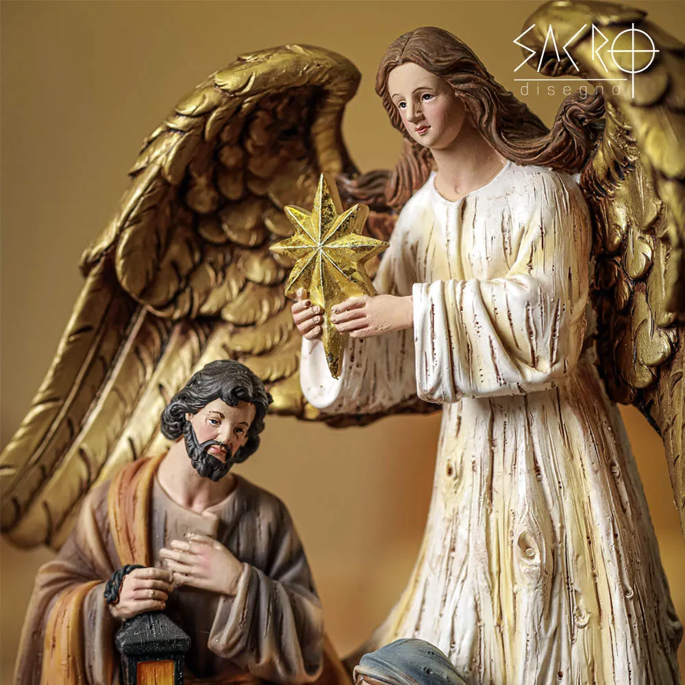

Curiosidades sobre os Anjos
Anjo da Anunciação
O anjo Gabriel anunciou a Maria que ela daria à luz o Filho de Deus. Sua mensagem simboliza fé, coragem e obediência à vontade divina.

Anjos no Presépio
Nos presépios, os anjos cantam e celebram o nascimento de Jesus, representando alegria e a presença celestial no momento sagrado.

Anjos na Decoração
Colocar anjos na árvore ou em enfeites simboliza proteção e o desejo de um Natal cheio de luz e bênçãos para o lar.